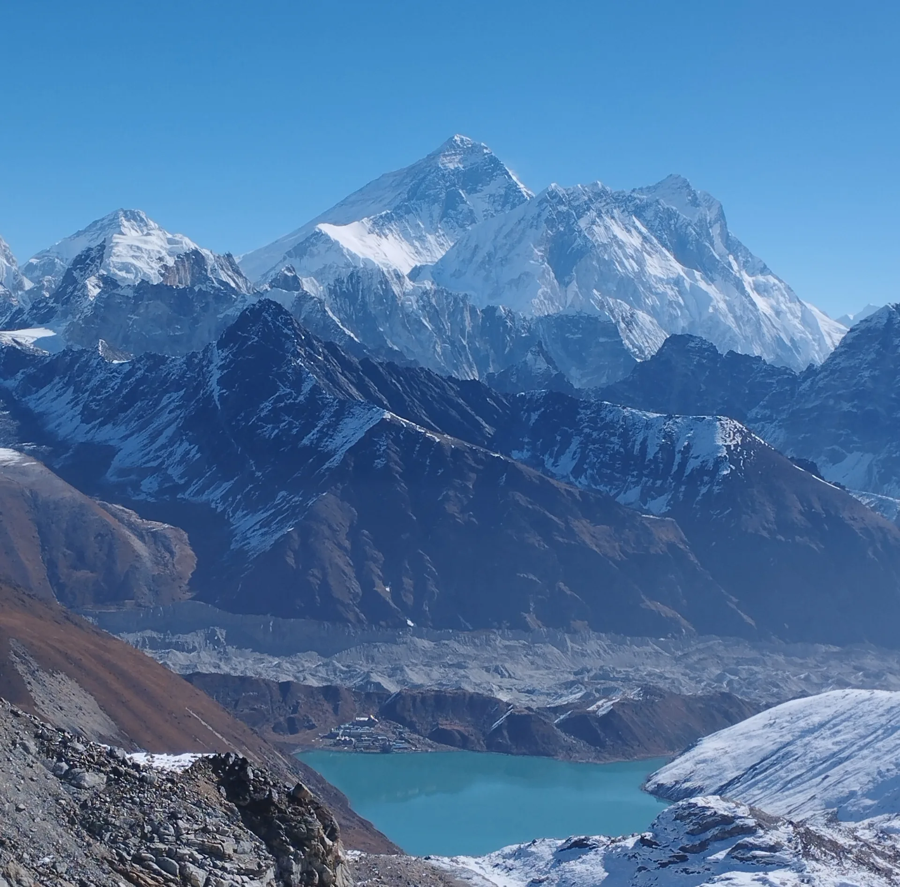
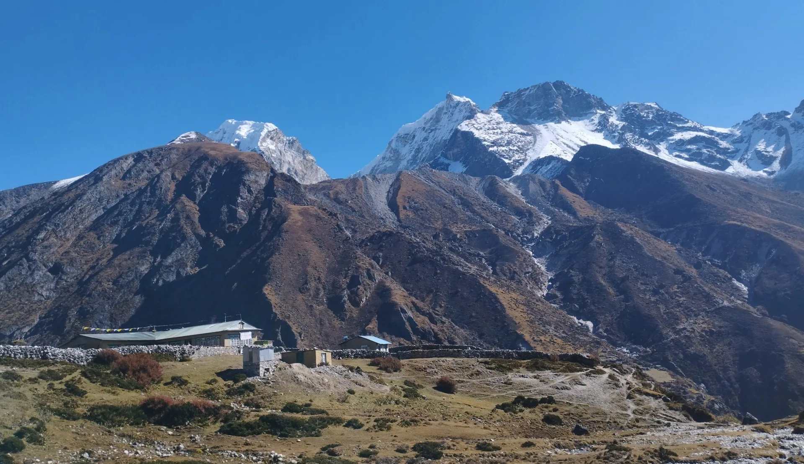
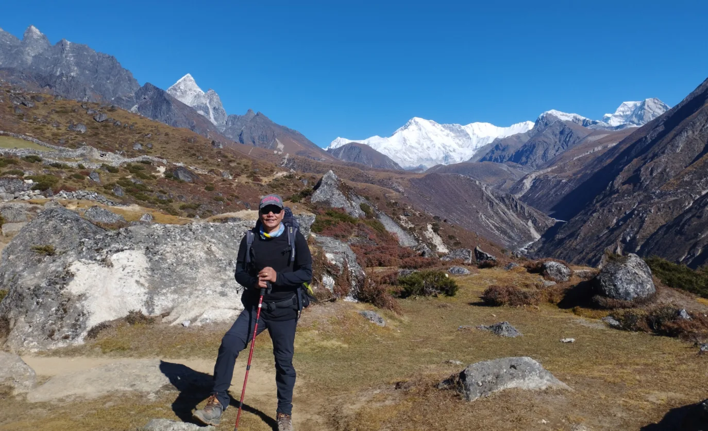
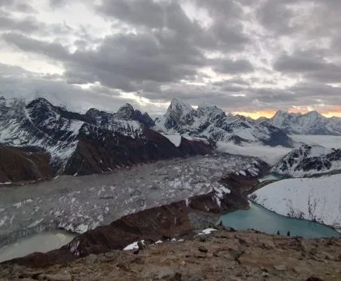

1. Executive Summary: Where Is Gokyo Lake on the World Map?
The Gokyo Lakes are an oligotrophic network of 19 glacial lakes situated in the Solukhumbu District of northeastern Nepal, entirely protected within the boundaries of Sagarmatha National Park (a UNESCO World Heritage Site).
Situated in the Gokyo Valley just west of the main Khumbu trekking highway, the primary settlement of Gokyo sits on the eastern shore of Dudh Pokhari (the Third Lake) at an elevation of 4,750 meters (15,584 feet).
Key Geographic Specifications at a Glance
- Official Name: Gokyo Lakes Wetland Complex (Ramsar Site No. 1692).
- GPS Coordinates: 27°57'30" N, 86°41'40" E.
- Elevation Range: 4,690m (1st Lake) to 5,070m (6th Lake).
- Total Protected Area: 7,770 hectares (19,200 acres) of alpine wetlands.
- Governing District: Solukhumbu District, Khumjung VDC, Koshi Province, Nepal.
- Primary Water Source: Sub-surface moraine seepage and meltwater from the 36km-long Ngozumpa Glacier.
2. The 6 Sacred Glacial Lakes: Names, Altitudes & Hydrological Profile

While the basin contains 19 small ponds and tarns, six major lakes form the primary hydrological and spiritual chain:
| Lake Order & Local Name | Elevation (m / ft) | Surface Area | Distinct Features & Trail Role |
|---|---|---|---|
| 1st Lake: Longpongo | 4,690m / 15,387ft | 1.4 hectares | First lake reached on trail; narrow and green; nesting site for Brahminy ducks. |
| 2nd Lake: Taujung (Taboche Tsho) | 4,710m / 15,453ft | 16.9 hectares | Deep cobalt blue; dramatic reflections of Taboche peak; fed by cascading glacial streams. |
| 3rd Lake: Dudh Pokhari (Gokyo Lake) | 4,750m / 15,584ft | 42.9 hectares | The main lake; site of Gokyo village lodges; sacred Janai Purnima pilgrimage site. |
| 4th Lake: Thonak Cho | 4,870m / 15,978ft | 65.0 hectares | The largest lake by surface area; deepest point at 43 meters; a 45-min walk north of Gokyo. |
| 5th Lake: Ngozumpa Cho | 4,990m / 16,371ft | 14.4 hectares | Panoramic ridge view of the massive south face of Cho Oyu and Everest. |
| 6th Lake: Gyazumba Cho | 5,050m – 5,070m / 16,568ft | ~10.0 hectares | Remote glacial snout lake sitting directly beneath Cho Oyu base camp; visited on Cho Oyu high treks. |
Many trekkers arrive at Gokyo village (3rd Lake) and only climb Gokyo Ri before returning. Taking an extra day to hike north along the moraine trail to the 4th Lake (Thonak Cho) and 5th Lake (Ngozumpa Cho) takes you to 'Scoundrel's Viewpoint'—widely considered the single most jaw-dropping vantage point of Everest and the Ngozumpa Glacier in the Himalayas!
3. The Ngozumpa Glacier: Nepal’s Longest Glacier (36 Kilometers)

The existence of the Gokyo Lakes is inextricably linked to the Ngozumpa Glacier.
Measuring 36 kilometers (22 miles) in length, Ngozumpa is the largest glacier in Nepal and the second-largest in the entire Himalayas (after the Siachen Glacier). Originating from the ice-capped summit walls of Mount Cho Oyu (8,188m), the glacier moves slowly southward down the valley.
Over tens of thousands of years, the glacier bulldozed millions of tons of granite rock, gravel, and silt, building massive lateral moraine ramparts rising 100 to 150 meters high. These natural earthen dams trapped glacial meltwater and subterranean springs in the side valleys, creating the stepped chain of the Gokyo Lakes.
4. Map & Geographic Boundaries: Solukhumbu & The Dudh Koshi Valley

To understand where Gokyo is situated relative to the rest of the Everest region, picture two parallel valleys running north-to-south:
- The Eastern Valley (Khumbu Valley): The heavily trafficked route following the Imja Khola and Khumbu Glacier through Tengboche, Dingboche, Lobuche, and Gorak Shep to Everest Base Camp.
- The Western Valley (Gokyo Valley): The wilder, quieter valley carved by the Dudh Koshi River, home to Dole, Machhermo, and the Gokyo Lakes.
- The Natural Divider: The two valleys are separated by a formidable spine of towering 6,000m peaks: Taboche (6,542m) and Cholatse (6,440m). The only pedestrian links between the two valleys are the high alpine pass of Cho La (5,420m) in the north, or descending all the way south to Sanasa near Namche Bazaar.
5. Distance Matrix: Distance from Kathmandu, Lukla, Namche & EBC
Here is the exact trail mileage, elevation change, and walking duration connecting Gokyo Lake with major Himalayan landmarks:
| Route Segment | Trail Distance | Cumulative Elevation Gain | Standard Hiking Time |
|---|---|---|---|
| Lukla (2,846m) to Namche Bazaar (3,440m) | 18.3 km / 11.4 miles | +1,040m / -440m | 2 Days (overnight in Phakding) |
| Namche Bazaar to Dole (4,040m) | 11.2 km / 7.0 miles | +850m / -250m | 5.5 to 6.5 hours (via Mong La) |
| Dole to Machhermo (4,470m) | 6.0 km / 3.7 miles | +520m / -90m | 3.5 to 4.5 hours |
| Machhermo to Gokyo 3rd Lake (4,750m) | 7.0 km / 4.3 miles | +380m / -100m | 4.0 to 5.0 hours (past 1st & 2nd Lakes) |
| Total Lukla to Gokyo Lake | ~42.5 km / 26.4 miles | +2,790m net ascent | 5 to 6 Days |
| Gokyo to EBC (via Cho La Pass) | 27.5 km / 17.1 miles | +1,450m across glacier | 3 Days (via Dragnag, Dzongla, Lobuche) |
6. Gokyo Ri (5,357m): The Greatest 360° Mountain Viewpoint on Earth

Rising directly from the western shore of the 3rd Lake is Gokyo Ri (5,357m / 17,575 ft)—a steep, non-technical trekking peak that offers arguably the most comprehensive Himalayan panorama in existence.
While Kala Patthar (5,545m) puts you closer to Everest's summit cone, Gokyo Ri provides a far superior wide-angle perspective:
- Four 8,000m Giants Simultaneously: From the prayer-flag draped summit cairn, you can see Mount Everest (8,848m), Lhotse (8,516m), Makalu (8,485m), and Cho Oyu (8,188m) in a single panoramic turn!
- The Glacial River: Directly below your feet lies the massive 36-kilometer Ngozumpa Glacier, winding like a frozen grey dragon through the valley floor.
- Turquoise Mirrors: Looking down, the vibrant emerald and turquoise waters of Dudh Pokhari contrast spectacularly against the sterile black and white rock of the high peaks.
7. Spiritual Significance: Naga Serpent Deities & Janai Purnima Festival

To the indigenous Sherpa and Hindu communities of Nepal, Gokyo Lake is not merely a geographic landmark—it is a deeply sacred sanctuary:
- The Naga Serpent Gods: According to local Sherpa Buddhist belief, the deep waters of Dudh Pokhari are the sacred dwelling of the Nagas (water spirits and serpent deities). Locals believe disturbing the waters or polluting the shoreline will anger the spirits, bringing drought, illness, or severe storms to the Khumbu.
- Janai Purnima Pilgrimage: During the full moon of August (Shravan Purnima), hundreds of Hindu devotees and Shamans (Jhankris) undertake the arduous trek from lower Nepal to bathe in the freezing waters of the Third Lake, honoring Lord Shiva and Lord Vishnu.
- Strict Cultural Taboos: Swimming, washing clothes in the lake, and fishing are strictly forbidden. Visitors must treat the shoreline with reverent silence and carry away all trash.
Trekkers must never swim, wade, or wash clothes in any of the Gokyo Lakes. Beyond the extreme risk of hypothermia in 2°C glacial water, disturbing the lakes deeply offends local Sherpa Buddhist spirituality and violates the conservation laws of Sagarmatha National Park.
8. How to Get to Gokyo Lake: Step-by-Step Route Breakdown
A standard Gokyo Lake trek requires 11 to 13 days round-trip from Kathmandu:
- Day 01: Fly to Lukla (2,846m) & Trek to Phakding (2,610m). 3.5 hrs walking down the Dudh Koshi valley.
- Day 02: Phakding to Namche Bazaar (3,440m). 6 hrs walking; cross Hillary Bridge and climb Namche Hill.
- Day 03: Acclimatization Day in Namche. Hike to Hotel Everest View (3,880m) to stimulate red blood cell adaptation.
- Day 04: Namche Bazaar to Dole (4,040m). Turn northwest off the main trail at Sanasa; climb to the panoramic ridge of Mong La (3,975m), descend to Phortse Thanga, and climb through rhododendron forests to Dole.
- Day 05: Dole to Machhermo (4,470m). 4 hrs hiking along a high alpine valley balcony with sweeping views of Cho Oyu.
- Day 06: Machhermo to Gokyo Lake (4,750m). 4.5 hrs; climb through the river canyon, pass the 1st Lake (Longpongo) and 2nd Lake (Taujung), and arrive at the picturesque lodges of the 3rd Lake.
- Day 07: Sunrise on Gokyo Ri (5,357m) & Explore 4th/5th Lakes. The pinnacle day of the expedition.
9. High Pass Connections: Cho La Pass (to EBC) & Renjo La Pass (to Thame)

Gokyo is not a dead-end valley; it is the central nexus of Nepal's greatest high-pass circuits:
Cho La Pass (5,420m) — To EBC
Heading east from Gokyo across the Ngozumpa Glacier leads to Dragnag, the launchpad for crossing the glaciated Cho La Pass. This technical pass connects directly to Dzongla and Lobuche, allowing trekkers to combine Gokyo Lakes and Everest Base Camp into one epic 16-day circuit.
Renjo La Pass (5,360m) — To Thame
Climbing west directly from the shoreline of the 3rd Lake brings you to Renjo La Pass. Looking back from the pass provides the famous postcard view of Gokyo Lake nestled below Everest and Makalu. The trail descends into the untouched Bhote Koshi valley and historic Thame village.
If you plan to cross Cho La Pass (5,420m) from Gokyo to Everest Base Camp, carrying slip-on microspikes is mandatory. The eastern slope requires crossing an active 500-meter hardpack ice glacier where ordinary boot rubber cannot maintain traction.
10. Weather, Freezing Cycles & Best Seasons to Visit
The appearance and color of the Gokyo Lakes transform completely across the four Himalayan seasons:
| Season | Months | Lake Appearance & Color | Temperatures (Day / Night) | Trekking Suitability |
|---|---|---|---|---|
| Autumn | Oct – Nov | Brilliant, sparkling turquoise; crystal reflections | 8°C to 12°C / -6°C to -12°C | Peak Season (Best clarity & trail conditions) |
| Spring | Mar – May | Thawing ice creating floating floes; vibrant blue water | 10°C to 14°C / -2°C to -8°C | Outstanding (Rhododendrons in lower valley) |
| Winter | Dec – Feb | Completely frozen over into thick white/blue ice | 0°C to 5°C / -15°C to -22°C | Challenging; microspikes & heavy down gear required |
| Monsoon | Jun – Aug | High water levels; frequent cloud cover; lush green shores | 12°C to 16°C / 4°C to 8°C | Wet trails; leeches below 3,000m; pilgrimage month |
11. The Gokyo Village Settlement: Teahouses on the Shoreline
Unlike permanent year-round agricultural towns like Namche Bazaar, Gokyo is a seasonal high-altitude settlement that originated as summer yak pastures (kharkas) for Khumjung villagers.
Today, it hosts approximately 10 to 12 high-standard stone lodges:
- Sunroom Dining Halls: Most lodges (such as Gokyo Resort and Fitzroy Inn) feature floor-to-ceiling glass sunrooms that trap solar heat during the afternoon, allowing you to sip hot lemon ginger tea while watching the sunset over the lake.
- Amenities at 4,750m: Hot gas showers ($5–$6 USD), solar device charging, satellite Wi-Fi (Everest Link), and fresh bakeries serving warm apple pie and chocolate cake are available during peak seasons.
- Winter Closures: In January and early February, many lodge operators lock up and migrate to lower villages (Namche or Kathmandu), leaving only 1 or 2 caretaker lodges open.
12. Environmental Conservation: Preserving the Ramsar Wetland
In September 2007, the Gokyo Lake complex was officially recognized under the Ramsar Convention on Wetlands (Site No. 1692) as an internationally significant fragile ecosystem:
- Avian Biodiversity: The lakes are a vital trans-Himalayan migratory corridor. During spring and autumn, rare waterbirds—including the Ruddy Shelduck (Brahminy duck), Bar-headed Goose, and Common Pochard—rest and breed along the shoreline.
- Climate Threats: Rapid atmospheric warming has accelerated the melting of the Ngozumpa Glacier. Supra-glacial lakes are merging, and hydrologists continuously monitor the terminal moraine dam to prevent dangerous GLOF events.
- Eco-Tourism Code: Trekkers must strictly pack out all non-biodegradable waste, avoid disposable plastic water bottles, and refrain from contaminating lake streams.
13. Top 10 Amazing Facts About the Gokyo Lakes
Here are ten astounding facts that make Gokyo Lake one of the most remarkable places on Earth:
- 1. Highest Freshwater Lake System: Spanning from 4,690m to 5,070m, it is the highest collection of freshwater lakes in the world.
- 2. Nineteen Lakes in Total: While six are famous, the broader glacial basin contains 19 interconnected tarns and lakes.
- 3. Dammed by Nepal's Longest Glacier: The lakes were created entirely by the natural lateral moraine of the 36km-long Ngozumpa Glacier.
- 4. 43-Meter Depth: The fourth lake (Thonak Cho) reaches a maximum depth of 43 meters (141 feet).
- 5. Internationally Protected: Designated a Ramsar Wetland of International Importance in 2007.
- 6. Sacred Snake Sanctuary: Revered as the home of the Hindu and Buddhist water snake deity (Naga Devata).
- 7. The Janai Purnima Dip: Devotees brave sub-zero water temperatures every August to cleanse negative karma.
- 8. Better Panoramic View Than EBC: Gokyo Ri reveals four 8,000m peaks (Everest, Lhotse, Makalu, Cho Oyu); from EBC, Everest's peak is hidden.
- 9. Zero Motorized Traffic: Protected by national park law, no motorboats or vehicles have ever entered the valley.
- 10. Solid Ice in Winter: From late December through February, the lake surface freezes into ice thick enough to support human footsteps!
14. Frequently Asked Questions: Gokyo Lake Location & Visits
Where is Gokyo Lake located?
Gokyo Lake is located in the Solukhumbu District of eastern Nepal, within the protected boundaries of Sagarmatha National Park. It lies in the Gokyo Valley just west of the main Everest Base Camp trail, approximately 38 km north of Lukla and 150 km northeast of Kathmandu.
What is the altitude of Gokyo Lake?
The main settlement and 3rd Lake (Dudh Pokhari) sit at an elevation of 4,750 meters (15,584 feet) above sea level. The entire chain of six lakes ranges from 4,690m at the 1st Lake to 5,070m at the 6th Lake.
Can you swim in Gokyo Lake?
No, swimming is strictly prohibited for both religious and environmental reasons. The lakes are sacred to local Sherpas as the home of the water serpent deities (Nagas), and the frigid water temperatures (near freezing) present an extreme risk of hypothermia. The only exception is a brief ceremonial immersion by pilgrims during the Janai Purnima festival in August.
How many lakes are there in Gokyo?
There are six primary sacred lakes along the main valley trail (Longpongo, Taujung, Dudh Pokhari, Thonak Cho, Ngozumpa Cho, and Gyazumba Cho), with an additional 13 smaller seasonal tarns and ponds in the wider Ramsar wetland basin (19 lakes total).
How do you get to Gokyo Lake from Kathmandu?
Fly from Kathmandu (or Ramechhap) to Lukla (2,846m), then trek for 5 to 6 days along the Dudh Koshi Valley through Phakding, Namche Bazaar, Dole, and Machhermo to reach the Third Lake at Gokyo.
Is Gokyo Lake better to visit than Everest Base Camp?
Many experienced trekkers prefer Gokyo Lakes because the trails are far less crowded, the scenery is enhanced by vibrant turquoise water, and climbing Gokyo Ri (5,357m) offers a panoramic view of four 8,000m peaks (Everest, Lhotse, Makalu, Cho Oyu) that surpasses the view from Base Camp.
Can you walk from Gokyo Lake to Everest Base Camp?
Yes! Trekkers can cross the glaciated Cho La Pass (5,420m) from Gokyo to Dzongla, connecting directly to Lobuche and Everest Base Camp in 2 to 3 days of hiking.
Do the Gokyo Lakes freeze in winter?
Yes. From late December through February, sub-zero nighttime temperatures (-15°C to -22°C) cause the lakes to freeze over completely into thick, solid sheets of ice and snow.

Ready to Experience the Himalayas?
Whether you are preparing for high-altitude trekking, cultural circuits, or alpine summit expeditions, start planning a bespoke journey tailored to your fitness, travel season, and style.